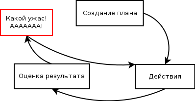
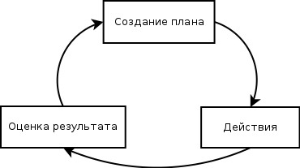

Disclaimer: советы, данные здесь, могут показаться банальными и очевидными. Я не психолог, и я не проводил исследования, работают они или нет у кого-то еще. Тем не менее, они хорошо вписываются в мое видение проблемы и могут быть полезны кому-либо.
Я пишу эту статью по одной причине. По-моему, для хорошей учебы вовсе не обязательны какие-то исключительные способности, не обязательно отказываться от всех остальных возможностей в жизни. Нужно только уметь распределить время. В этом деле у меня есть небольшой опыт, и я считаю, что им стоит поделиться. Сразу скажу, речь пойдет о 1-5 семестрах ФУПМа.
В 1-4 семестрах я использовал некоторую систему, о которой расскажу ниже. В 5 нет. Результаты: средний балл за 1-4 семестры 9.6, за 5-й — 6.7.
Если посмотреть на ситуацию со стороны, в МФТИ большинство задач довольно алгоритмичны (т. е. нужно сходить на лекцию/почитать книжку, понять алгоритм, а потом выполнить его с конкретными входными данными). А если взять все, что нужно сделать и равномерно распределить по дням, получится, что в сутки самостоятельной работы нужно только 3-5 часов (в зависимости от семестра, это реальные данные). То есть, никакой проблемы нет, и у всех всё должно получаться. Почему это не так? На мой взгляд, проблема в некорректном распределении времени.
В любой деятельности главное — иметь план и четко ему следовать. А также корректировать план, если он не дает нужного результата.
Вспомните, как вы обычно адаптируетесь в новом месте или в новой ситуации. Сначала вы нервничаете, хотите узнать больше, думаете «как поступить лучше». В какую столовую пойти? Можно ли тут забивать на пары? Когда начинать делать задание? На этой стадии вы думаете и принимаете сознательные решения. Что происходит потом? Вы считаете, что все знаете. Как учиться, где есть. В вашем мозгу сформирована некоторая программа действий.
В некоторых случаях это ваш враг. Программа требует корректировки. Например, она неоптимальна. Внешние условия меняются, вы меняетесь. Проблема в том, что не всегда получается отследить момент, когда что-то изменилось. Об этом никто не говорит в открытую. Это просто происходит. Вы продолжаете использовать «старые» методы. Возможно, немного крутите их параметры (количество времени для бота и т. п.). Но это несильно улучшает ситуацию. В большинстве случаев программа говорит вам об этом. Это выражается ощущением «у меня нет времени». Как только появилось такое ощущение — это значит, что нужно сесть и подумать. Программа не работает. И она кричит вам об этом: «у меня нет времени! Я — плохой алгоритм, я не гожусь. Подумай, как это исправить».
Что обычно делают люди в таких ситуациях? Правильно, продолжают использовкать старую программу, крутя коэффициенты. «хмм, отдохну денек, а потом продолжу». И дальше то же самое. Или того хуже — «АААА буду ботать, пока не сдохну, раз нет времени!»
|  |  |
Если вы чувствуете, что ваши действия не приводят к желаемому результату, что нет времени или что вы ужасно устаете — не стоит расстраиваться или, наоборот, бросаться делать что-либо. Поражение не фатально, тем более, в институте. Стоит отвлечься, а потом составить хороший план, который даст результат.
В 5 семестре я перестал вести журнал действий, говоря себе, что «у меня нет на это времени», т.к. к учебе добавилась работа. Я понимал, что, возможно, это только ухудшит ситуацию, но не придал этому значения.
Как результат, очень сильно уставал. В таком состоянии сложно проанализировать, что идет не так, тем более, когда нет фактов — сколько и на что времени потрачено. Соответственно, не получалось составить хороший план, как найти баланс между учебой и работой. Я действовал «на эмоциях». Совмещать не получалось, т.к. после дня учебы, потом дороги и работы до 2-3 ночи там следующий день выпадал.
Поэтому я решил сначала закончить с работой, а потом догнать в учебе. Чтобы действовать побыстрее, я оставался там на ночь по 3-4 дня и использовал Фенотропил. Каждый день казалось, что еще 1-2 суток, и будет готово. Но требования заказчика менялись, и работа затянулась на пару месяцев. Почему я этого не заметил? Во-первых, усталость мешает проанализировать ситуацию и найти из нее выход. Это ловушка: один раз пустив дело на самотек, отказавшись от планирования, вы устаете, и вам будет стоить больших усилий сесть и разобраться. Во-вторых, у меня не было фактов, а именно, журнала потраченного времени. Действуя эмоцинально, я считал, что пока все хорошо, и можно продолжать.
В итоге такой режим привел к некоторым проблемам со здоровьем, о которых можно почитать в первой части.
Сейчас кажется очевидным, что распределив время правильно, можно было бы выполнить дела без плохих последствий и получить лучшие результаты.
Вы узнали, как можно эффективно учиться. Для этого стоит
Напомню, в среднем в день получается 3-5 часов самостоятельной работы, но распределение неравномерное. Когда-то стоит отдохнуть, а когда-то — посвятить день учебе.
Спасибо за ценные замечания по статье Славе, Андрею, Юре.
Удачи всем! :) Совершенствуйтесь и находите для себя что-то новое!